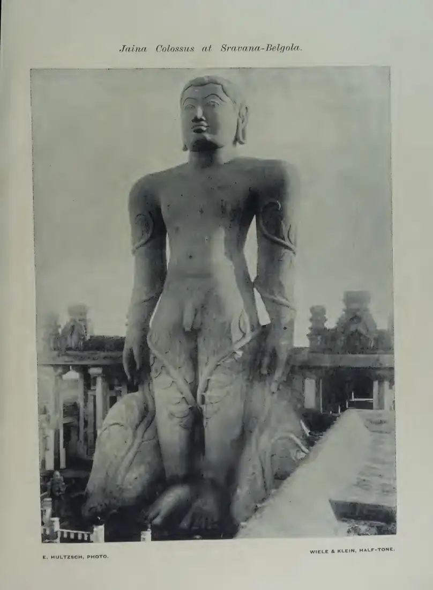
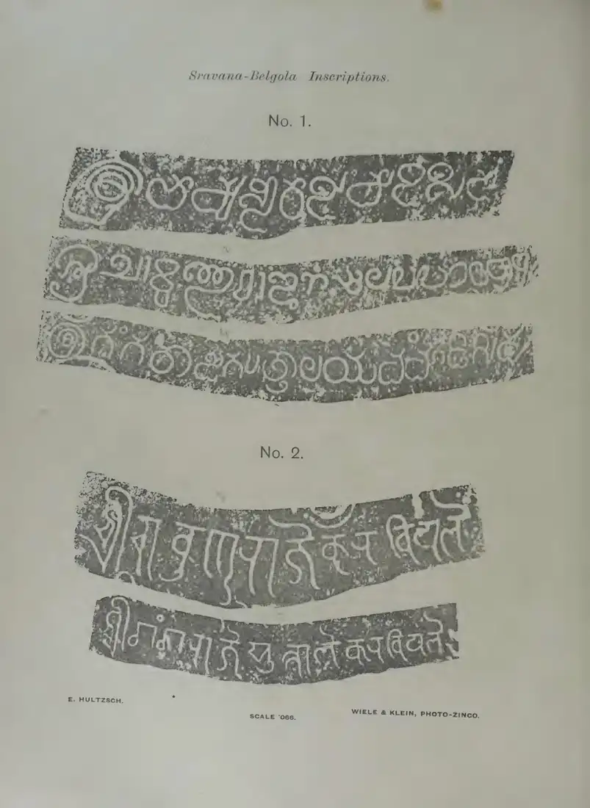
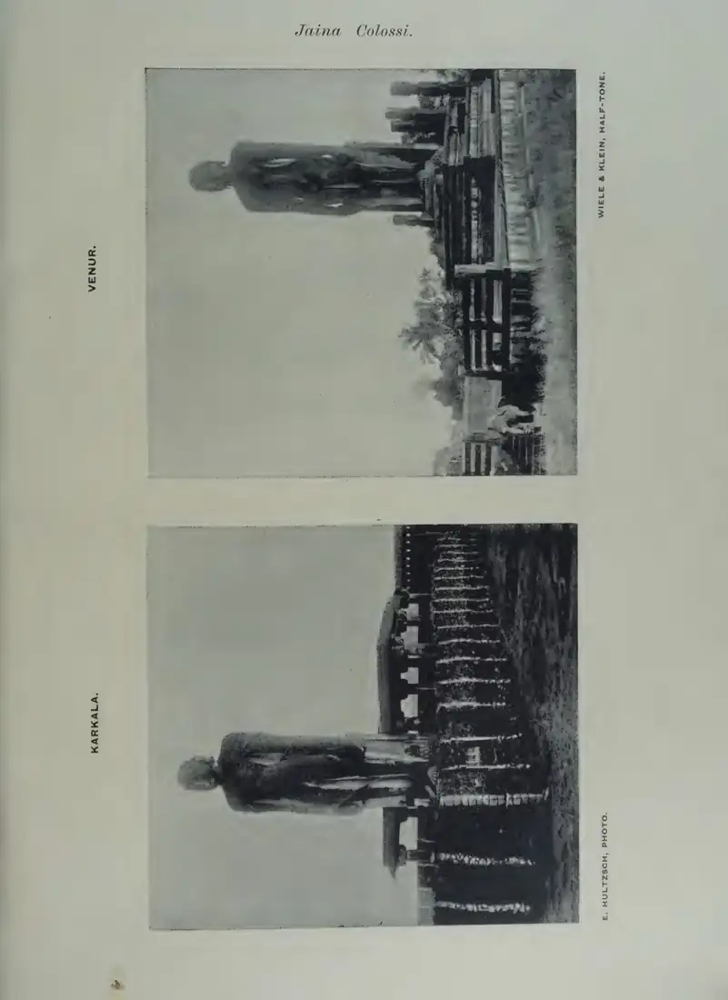

Inscriptions on the three Jaina colossi of Southern India
INSCRIPTIONS ON THE THREE JAINA COLOSSI
OF SOUTHERN INDIA.
In the course of my two last cold-weather tours I had occasion to visit the sites of the three famous monolithic images at Śravaṇa-Belgoła in the Hassan district of the Mysore State and at Kârkała and Vênûr in the South Canara district of the Madras Presidency. For descriptive notices of these monuments the reader is referred to Mr. Rice's Inscriptions at Śravaṇa-Belgoła, Introduction, p. 29 ff., and Mr. Sewell's Lists of Antiquities, Vol. I. pp. 231 and 236 f. The largest and most ancient of them is the one at Belgoła, which, according to Mr. Rice, is 57 feet high and was set up by the minister Châmunđarâja between A.D. 977 and 984. The second, at Kârkała, is 41' 5" high and was erected by the chief Vîra-Pânđya in A.D. 1432. Along with the two inscriptions on the image at Kârkała, I publish an inscription (E. below) on a neighbouring pillar which was raised by the same Vîra-Pânđya in A.D. 1436. The smallest and most recent of the three monoliths is the one at Vênûr, which is 35 feet high and was established by the chief Timmarâja in A.D. 1604.
The saint or god whom the three images represent is called in Sanskrit Bâhubalin or Bhujabalin1 and was believed to have been the son of Ādijina (G. below), i.e. the first Jina Rishabhanâtha.2 His vernacular name was Gummaṭa (D.), Gummaṭêśa (G.), Gommaṭa or Gommaṭêśvara.3
The inked estampages from which I am publishing the Kârkała inscriptions (Nos. C., D. and E. below) were prepared by my peons. Those of the Belgoła and Vênûr inscriptions (Nos. A., B., F. and G.) had to be done by Jainas under my supervision, because none but Jainas are permitted to touch the images at Belgoła and Vênûr.4
A.—On the proper right side of the colossus at Belgoła.
This inscription (No. 52a of 1902) was first published by Mr. Rice,5 who, however, did not succeed in reading the second word in l. 2.
The alphabet and language of the first and third lines are Kanarese. The second line is a Tamil translation of l. 1 and consists of two words, of which the first is written in the Grantha and the second in the Vatṭeĵuttu alphabet. The first two lines record that Châmunđarâja caused to be made the image at the foot of which the inscription is engraved, and the third line, that Gaṅgarâja caused to be made the buildings which surround the image.
In Mr. Rice's opinion, these inscriptions "are undoubtedly of the period when that work was completed."6 A comparison of the alphabet of l. 1 with that of the epitaph of Mârasimha II.7 and of the alphabet of l. 3 with that of an inscription of Gaṅgarâja8 has convinced me that Mr. Rice is correct, i.e. that l. 1 belongs to the time of Châmunđarâja, the minister of the two Gaṅga kings Mârasimha II. and Râchamalla II.,9 and that l. 3 belongs to the time of Gaṅgarâja, the minister of the Hoysała king Vishnuvardhana.10 The second line is probably contemporaneous
1 See the inscriptions C. and F. below.
3 Compare Ind. Ant. Vol. II. p. 184.
2 Inscriptions at Śravaṇa-Belgoła, Index, s. v.
4 Mr. Walhouse had the same experience; see Ind. Ant. Vol. V. p. 37.
5 Inscriptions at Śravaṇa-Belgoła, No. 76.
6 Op. cit. Introduction, p. 22.
7 Above, Vol. V. No. 18, Plate.
8 No 78 of 1893 (Inscriptions at Śravaṇa-Belgoła, No. 59).
9 Above, Vol. V. pp. 171 and 173.
10 Dr. Fleet's Dyn. Kan. Distr. p. 499 f.
Plate 1 is bound after this page.
Plate 2 is bound after this page.
with the first line. In Mr. Rice's opinion, ll. 1 and 2 were engraved between A.D. 977 and 984,1 and l. 3 between A.D. 1115 and 1118.2
TEXT.3
TRANSLATION.
(Line 1.) The glorious Châmuṇdarâja caused (this image) to be made.
(L. 2.) The glorious Châmuṇdarâja caused (this image) to be made.
(L. 3.) The glorious Gaṅgarâja caused the enclosure to be made.
B.— On the proper left side of the colossus at Bełgoła.
This inscription (No. 52b of 1902) also was first published by Mr. Rice.5
The alphabet is Nâgarî and the language is Marâthî. The first line is a translation of l. 1 of the preceding inscription (A.), and the second line of l. 3 of the same inscription. As the type of the alphabet of ll. 1 and 2 is quite identical, it may be assumed that both lines were engraved in the time of Gaṅgarâja, whose name occurs in the second line. The Marâthî language was perhaps adopted for the benefit of Jaina pilgrims from the Marâtha country.
TEXT.6
- 1 Śrī-Châvuṇdarâjêm karaviyalêm
- 2 Śrī-Gaṅgarâjê suttâlê karaviyalê
TRANSLATION.
(Line 1.) The glorious Châvuṇdarâja caused (this image) to be made.
(L. 2) The glorious Gaṅgarâja caused the enclosure to be made.
C.— On the proper right side of the colossus at Kârkała;
Śaka-Samvat 1353.
Śaka-Samvat 1353.
This inscription (No. 63 of 1901) was first published in a tentative manner by Dr. Burnell.7 Mr. Rice's reprint of Dr. Burnell's text8 contains a few improvements, based on a copy which was supplied to him by the late Brahmasuri Sastri, the well-known Jaina scholar of Śravaṇa-Bełgoła.
The alphabet is Kanarese, with the exception of the colophon Śrī-Pâṇdyarâya in l. 15, which is in Grantha characters. The inscription consists of two Sanskrīt verses and a few words in Sanskrit prose (l. 14 f.). It records that the chief Vira-Pâṇdya (l. 11) or Pâṇdyarâya (l. 15), who was the son of Bhairavêndra of the lunar race, caused to be made the image of Bâhubalin, on which the inscription is engraved.
1 Inscriptions at Śravaṇa-Bełgoła, Introduction, p. 22.
2 Loc. cit. p. 23; see Ind. Ant. Vol. XXIII. p. 116, Nos. 17 and 13.
3 From two inked stampages.
4 The virdma after râjan and ttân is expressed by a dot (pullê) at the top of the letter. There is another unexplained dot behind râjan.
5 Inscriptions at Śravaṇa-Bełgoła, No. 75.
6 From two inked stampages 7 Ind. Ant. Vol. II. p. 353.
8 Inscriptions at Śravaṇa-Bełgoła, Introduction, p. 31 f.
According to verse 1, Vīra-Pāṇḍya was prompted to undertake this work by the Jaina priest Lalitakirti, who belonged to the lineage of Panasōge1 and to the Dēśigaṇa. The same verse occurs in another Kārkaḥa inscription2 of Immaḍi-Bhairarasa of the family of Jinadatta,—apparently one of the successors of Vīra-Pāṇḍya,—who built the Chaturmukhabasti at Kārkaḥa in Śaka-Samvat 1508 (expired), the Vyaya year. It follows from this, that the Jaina svāmins of Hanasōge bore the hereditary title Lalitakirti3 and were the spiritual preceptors of the chiefs of Kārkaḥa.
The day on which the image was consecrated fell into the (expired) Śaka year 1353 (in numerical words, l. 5 f., and in figures, l. 14 f.), the cyclic year Virōdhikṛit. According to Professor Kielhorn's calculation, the date corresponds to Wednesday, the 13th February A.D. 1432.4
TEXT.5
- 1 श्रीमदेशीगणे ख्या-
- 2 ते पनसोगेवलीश्वरः6 ।
- 3 योभूल्ललितकी-
- 4 र्च्याव्यस्तन्मुनींद्रोपदे-
- 5 शतः ॥ [१*] स्वस्ति श्रीशकभूपते-
- 6 स्त्रिशरवङ्गींदोर्व्विरोध्या-
- 7 दिक्कद्वर्षे फाल्गुनसौ-
- 8 म्यवारधवलश्रीद्वा-
- 9 दशीसत्तिथौ । श्रीसोमा-
- 10 न्ययभैरवेंद्रतनु-
- 11 जश्रीवीरपांचेशिना नि-
- 12 र्म्याप्य प्रतिमात्र बा-
- 13 हुवलिनो जीयाद्य-
- 14 तिष्ठापिता ॥ [२*] शकवर्ष
- 15 १३५३ [॥*] श्रीपांचराय [॥*]
TRANSLATION.
(Verse 1.) At the advice of that chief of sages, named Lalitakirti, who was the lord of the lineage (āvali) of Panasōge, (which arose) in the holy (and) famous Dēśigaṇa,—
(V. 2.) Hail! In the (cyclic) year Virōdhyādikṛit7 (which corresponded) to (the year measured by) three, the arrows (5), the fires (3) and the moon (1) of the glorious Śaka king,8
1 This is the modern Hanasōge in the Yeđatore tāluka of the Mysore district. See Mr. Rice's Ep. Carn. Vol. IV., Introduction, p. 16.
2 No. 62 of 1901. For a very incorrect transcript of this record see Ind. Ant. Vol. V. p. 40 ff. The tithi of the date is the sixth, and not the fifth as the published transcript has it.
3 Thus the svāmins of Śravaṇa-Belgoḥa and Mūḍabidure have the title Chārukirti, and those of Humcha the title Dēvēndrakirti.
4 Ind. Ant. Vol. XXIII. p. 119, No. 42.
5 From an inked stampage.
6 Read °सोगावली°.
7 I.e. 'krit beginning with Virōdhin,' which is an artificial way of expressing Virōdhikṛit.
8 I.e. Śaka-Samvat 1353.
(on) a Wednesday in Phâlguna, on the auspicious tithi of the holy dvādaśi1 of the bright (fortnight),—an image of Bâhubalin was here caused to be made and was consecrated by the glorious lord Vira-Pândya, the son of Bhairavêndra of the glorious family of the Moon. Let (this image) be victorious !
(Line 14.) The Śaka year 1353.
(L. 15.) O glorious Pândyarâya !2
D.—On the proper left side of the colossus at Kârkała.
This inscription (No. 64 of 1901) consists of one verse in the Kanarese alphabet and language, and two words in Nâgarî characters and Sanskrit prose (l. 7). Like the preceding inscription (C.), it records that the image was caused to be made by Pândyarâya (ll. 2 f. and 7), the son of Bhairavêndra. But the image is here stated to be one of Gummaṭa, the lord of Jinas.
TEXT.3
- 1 *सूरिनुतभैरवै-
- 2 दकुमारश्रीपांच-
- 3 रायनिंदतिमु-
- 4 ददिं । कारित गुंमट-
- 5 जिनपतिचारुश्रीमू-
- 6 त्तिं कुडुगे निमगभिम-
- 7 तमं ॥ श्रीपांचराय जय [॥*]
TRANSLATION.
Let it grant you (every) wish,—the beautiful holy image of Gummaṭa, the lord of Jinas, which was caused to be made with great delight by the glorious Pândyarâya, the son of Bhairavêndra who was praised by wise men ! O glorious Pândyarâya, be victorious !
E.—On the Brahmadêvastambha in front of the colossus at Kârkała;
Śaka-Samvat 1358.
Śaka-Samvat 1358.
This inscription (No. 65 of 1901) is written in the Kanarese alphabet and language. It consists of one verse, which is preceded by a short prose passage, and records that Vira-Pândya, the son of Bhairava of the family of Jinadatta,—the same prince whose name we have found in the two preceding inscriptions (C. and D.),—set up this pillar which bears at the top an image of Brahman. The date was the 12th tithi of the bright fortnight of Phâlguna in Śaka-Samvat 1358 (current), the cyclic year Râkshasa, i.e. A.D. 1436.
TEXT.5
- 1 ५ शकनृपन १३५८ राक्षससंवत्सर[द फ]ाल्गुन श्रु
- 2 १२ लु ॥ *जिनडत्तान्वयभैरवतनयश्री[वी]रपां-
1 I.e on the twelfth tithi.
Compare the colophon of the next inscription (D.).
2 From an inked stampage.
3 From an inked stampage.
4 Metre : Kanda.
5 Metre : Kanda. Read जिनदत्ता०.
3 द्यन्तपतिगे वरमं । मनमोल्घीय[लु]1 नेल[सि]द
4 जिनभक्तं ब्रह्मनीगे निमगभि[मत]मं ॥
TRANSLATION.
On the 12th (tithi) of the bright (fortnight) of Phálguna in the Rákshasa year (which corresponded to the year) 1358 of the Śaka king. Let it grant you (every) wish,—(the image of) Brahman, the devotee of Jina, who took up his abode3 (here) in order to grant with pleasure (every) desire to the glorious prince Vīra-Pāṇdya, the son of Bhairava of the family of Jinadatta !
F.— On the proper right side of the colossus at Vēnūr;
Śaka-Sainvat 1525.
Śaka-Sainvat 1525.
A fairly correct transcript of this inscription (No. 72 of 1901) was published by Mr. Rice in the Introduction to his Inscriptions at Śravaṇa-Belgoła.3
The inscription is disfigured by a crack, which has injured one or more letters in almost every line. The alphabet is Kanarese, and the language is Sanskrit verse. In several instances the letter d is closed and consequently identical in shape with dh. This remark applies also to the next inscription (G.).
The inscription records that Timmarája of the family of Châmuṇda set up the image of the Jina named Bhujabalin4 at Ēnūra (the modern Vēnūr). This chief was the younger brother of Pāṇdya, the son of queen Pāṇdyaka, and the nephew and son-in-law of Râyakuvara.5 From the fact that the inscription mentions his uncle and mother, but not his father, it may be concluded that he and his family practised the alīya-santāna, i.e. the inheritance through nephews. Even now the Jaina laymen (śrávaka) of South Canara follow this rule, while the Jaina priests (indra) practise the makkała-santāna, i.e. the inheritance through sons.
Timmarája is stated to have set up the image at the instance of the Jaina priest Chârukirti,6 who belonged to the Déśigaṇa and was the pontiff of Belguła (the modern Śravaṇa-Belgoła). Hence the latter must have been the spiritual preceptor of his family. This suggests that the Châmuṇda to whose family Timmarája belonged (l. 14 f.) may be identical with the minister Châmuṇdarája who had set up the colossal statue at Belgoła.7
The day on which the image was consecrated fell into the expired Śaka year 1525 (in numerical words, l. 4 f.), the cyclic year Śôbhakṛit. Professor Kielhorn kindly contributes the following calculation :—
“The date regularly corresponds, for Śaka-Sainvat 1525 expired = Śôbhakṛit, to Thursday, the 1st March A.D. 1604, when the 10th tithi of the bright half ended 3 h. 33 m., and the nakshatra was Pushya from 1 h. 58 m. (or 2 h. 38 m.), after mean sunrise.— The sign Mithuna was lagna from about 5 h. 20 m. to about 7 h. 20 m. after true sunrise, i.e. the time indicated by the date is about midday.”
1 Read °दीयलु.
3 I. e. who was set up by the king.
3 Loc. cit. p. 32. The transcript supplied to Mr. Rice contains three misreadings :—Indu-Pushyakê for Guru-Pushyakê (l. 7); Ēnūra- for Ēnūra- (l. 10 f.); and anuj-Ēndra-su-ráj-ākhyas- for anujas-Tīmmaráj-ākhyas- (l. 14).
4 This is a synonym of Bâhubalin in the Kârkała inscription, C. above.
5 In the next following inscription (G.) he is called Râyakumâra. Kuvara is a tadbhava of kumâra.
6 Compare abcve, p. 110, note 3.
7 See p. 108 above.
Plate 3 is bound after this page.
TEXT.1
- 1 श्रीमत्परमगंभीरस्याद्वा-
- 2 दामोघलांक्[नं] । जीयाक्षै-
- 3 लोक्यनाथस्य शास[नं] जिनशास-
- 4 नं ॥ [१*] शकवर्षेष्वतीते[षु वि]षया-
- 5 क्षिशरेंदुषु । व[र्तमा]ने शोभक्त-
- 6 ति वत्सरे फालुना[व्यक्ते ॥] [२*] मासेथ श-
- 7 क्लपक्षेद्वदशम्यां गु[रुपु]ष्यक्ते । सु-
- 8 लग्ने मिथुने देशी[गणांब]रदिनेशितुः
- 9 [॥] [३*] बैद्रगुढाव्यपुरीपटक्षी[र]ांबुधिनिशा-
- 10 पतेः । चारुकी[र्ति]मु[ने]हिंव्यवाक्यादे-
- 11 नूरपत्तने ॥ [४*] श्री[र]ायकुवरस्याथ
- 12 जामाता त[त्सही]दरी- । पांद्यका-
- 13 व्यमहादेव्याः [सु]पुत्रः पांद्यभू-
- 14 पतेः । [५*] अ[तु]ज[स्ति]मरा[जा]व्यस्वामुं-
- 15 डान्वय[भूष]कः । अस्था[प]यत्प्रति[ष्ठाप्य]
- 16 भुजवत्प्याव्यकं जिनं ॥ ५2 ॥ शुभमस्तु ॥
TRANSLATION.
(Verse 1.) Let it be victorious,— the holy religion of the lord of the three worlds, the religion of Jina, the unfailing characteristic of which is the extremely profound scepticism !3
(Vv. 2-6.) After the Śaka years (measured by) the objects of the senses (5), the eyes (2), the arrows (5) and the moon (1)4 had passed, while the (cyclic) year Śôbhakrît was current, in the month named Phâlguna, on the brilliant (?) tenth tithi of the bright fortnight, in (the nakshatra) Pushyaka (combined with) Thursday, (and) in the auspicious lagna Mithuna,— at the divine order of the sage Chârukirti, the sun on the firmament of the Déśigaṇa (and) the moon in the milk-ocean of the pontificate5 of the town named Belguła,— he who was named Timmarâja, the ornament of the family of Châmunda, the son-ir-law of the glorious Râyakuvara, the virtuous son of his sister—the great queen named Pândyaka, the younger brother of prince Pândya, consecrated and set up the Jina named Bhujabalin at the town of Ênûra.
(Line 16.) Let there be prosperity !
G.— On the proper left side of the colossus at Vênûr;
Śaka-Samvat 1526.
This inscription (No. 73 of 1901) consists of two verses in the Kanarese alphabet and language. Like the preceding inscription (F.), it records that the image was set up by Timma,
1 From two inked estampages.
2 Read €.
Compare e.g. South-Ind. Inscr. Vol. I. No. 152, verse 2, and No. 153, verse 1.
4 I.e. Śaka-Samvat 1525.
Regarding patṭa see South-Ind. Inscr. Vol. I. p. 159, note 1.
the younger brother of jāṇdya, the son of queen Pāṇdyaka, and the nephew of Rāyakumāra. But the image is here stated to be one of the Jina Gummaṭēśa, the son of Ādijina, and Timma is stated to have belonged to the lunar race and to have ruled over the kingdom of Puñjaļike.1
The date (v. 1) is identical in every detail with that of the preceding inscription (F.); but the Śaka year is here 1526 (in words) current, while there it was 1525 expired.
Two shrines in front of the Vēṇūr image contain two inscriptions (Nos. 74 and 75 of 1901) which are dated in the same year. The shrine on the proper left is a chaityālaya of Chandranātha and was built by two queens of Vira-Timmarāja-Ođeyaru alias Ajilaru, “the beloved chief discive of the holy Chārukirtidēva,” viz. Pāṇdyakadēvi alias Vardhamānakka, and Mallidēvi. The shrine on the proper right is a chaityālaya of Śāntiśvara and was built by alias Binnāpi, another queen of the same chief.2
TEXT.3
- 1 श्रीशवव[ष]मं4 गणि[से स]ासिरदिं मि-
- 2 गुवट्टुगैक्कमु[क्कु]ा शतदिप्पता[८७]नेय
- 3 शोभक्करब्दद फालुनाख्यमासाश्रि-
- 4 [त]शुहपक्षदशमी गुरुपुष्यद यु-
- 5 [ग्म]ल[ग्न]दोळ्देशिगणा[य]गखगुरु-
- 6 पंडितरे[व]न दिव्यवाक्य[दिं] ॥ [१*] राय-5
- 7 कुमार[नो]प्पुवळियं सति पांड्य-
- 8 कदेवि[य पुत्रनत्र]6 सोमायतवं-
- 9 श[धु]र्य्यनुरुसाहसि पांड्यन्-
- 10 पानुजगुरुदानराधेयनुदा-
- 11 र[पुंजळि]केपट्टवनाळ्व नृपाश्रणि
- 12 तिंमन्नूभुजं श्रीयुतनं प्रति[ष्ठि]-
- 13 [सि]द[न]ादिजिना[क्क]ज[नं जि]नगुं[म]टेशनं ॥ [२*]
TRANSLATION.
(Verse 1.) In the year Śôbhakrīt (which was) the glorious Śaka year counted by twenty-six after one hundred having the number five, exceeding one thousand,7 (on) the tenth tithi of the bright fortnight falling into the month named Phālguna, in (the nakshatra) Pushya (combined with) Thursday, (and) in the lagna Yugma,—at the divine order of the Gurupaṇditadēva8 who is the foremost of the Dēśigana,—
(V. 2.) Prince Timma, the beautiful nephew of Rāyakumāra, the son of the virtuous Pāṇdyakadēvi, the chief of the great family of the Moon, the very daring younger brother
1 The kingdom (rājya) of Puñjaļi or Puñjaļike is mentioned also in two other inscriptions at Vēṇūr (Nos. 78 and 80 of 1901).
2 A very inaccurate translation of Binnāpi's inscription was given in Ind. Ant. Vol. V. p. 38, note.
3 From two inked estampages. 4 Metre: Utpalamāle.
5 I cannot find the name of this metre; it is a samavritta of 4 times 23 syllables.
6 The doubtful syllable tra looks as if it had been corrected from ga.
7 This is a “poetical” way of expressing Śaka-Samvat 1526.
8 This title refers to Chārukirti of Belgula; see l. 9 f. of the preceding inscription (F.).
of prince Pāṇdya, a Rādhēya (Karṇa) in excellent gifts, the foremost of princes, who was ruling the noble kingdom of Puñjalīke, consecrated here (the image of) the blessed Jina Gummatēsa, the son of Ādijina.


